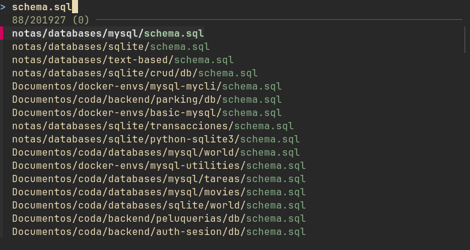
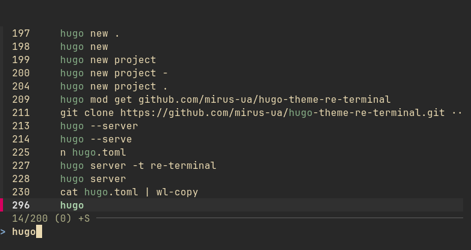
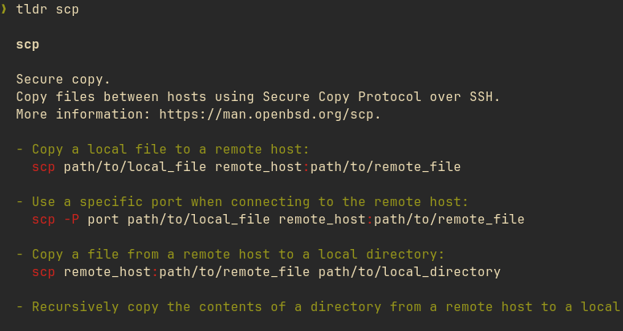
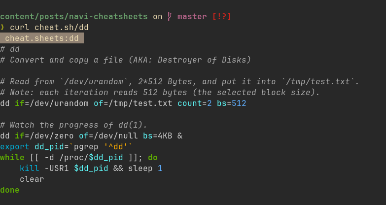
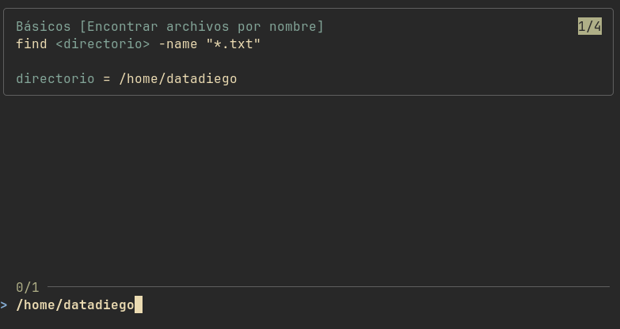

Ayudas con comandos
Da igual si eres nuevo en Linux o llevar usándolo años, los comandos se olvidan.
A base de usar a diario el sistema y tirar de terminal vas a saber los más comunes y que siempre usas, con esos no tendrás problema. Pero muchos son largos, en ocasiones con varios pipes, y además no se usan a diario.
La mayoría de usuarios tenemos algún directorio en nuestro sistema con varios archivos Markdown donde escribimos nuestras guias y comandos. Buscar entre ellos no es difícil, pero no es lo mejor.
En este post vamos a tratar como recordar comandos, que herramientas tenemos en linux para aliviar esta tarea, y como usarlas en nuestro dia a dia.
Ayudas basicas
Primero empezaremos por recordar las formas más comunes de informarnos sobre comandos:
man
La herramienta man viene incluida en cualquier distro, su uso es simple man <comando>:
Esta nos mostrará el manual completo del comando que necesitamos, junto a una explicación de sus flags y opciones disponibles.
No es una opción rápida, pero en muchas ocasiones tendremos muy buena información aqui.
--help
Esta es una opción disponible en muchos comandos, similar a man, nos mostrará que podemos hacer con el comando, y que opciones podemos usar, de manera mucho más resumida que man.
Aún así, no esperes ejemplos en la mayoría de casos, pero es la opción más rápida si necesitas saber que flags tienes disponibles y que hace cada una.
history | grep "comando"
Si mandaste un comando hace un tiempo y solo recuerdas una parte del mismo, puedes utilizar el comando previo para buscar en el historial de comandos y filtrar por una palabra clave:
❯ history | grep netstat
488 netstat -putan | grep 1234
496 netstat -putan | grep 1234
500 netstat -putan | grep 1234
505 history | grep netstat
Durante mucho tiempo, cuando quería anotar algún comando que sabia que iba a querer guardar en mis notas más tarde o accederlo de esta forma hacia esto:
De forma que luego podia hacer:
Ayuda avanzada
Tenemos herramientas que podemos instalar y que nos facilitarán aún más esta tarea.
fish
Ya hemos visto como usar fish para tener una shell con autocompletado y que nos permite almacenar comandos complejos de manera muy sencilla, puedes recordarlo en el capitulo sobre Shells.
fzf
fzf es un fuzzy finder en tu terminal, te sirve para buscar directorios, archivos y comandos.
En muchos casos lo tienes directamente disponible a través de tu gestor de paquetes. Una vez instalado, con una terminal abierta podrás usar dos atajos:
Ctrl + T
Busca archivos por nombre o formato, simplemente escribe el nombre y navega por los resultados:

Ctrl + R
Busca comandos que ya has lanzado previamente, es muy similar a lo que haciamos con history, pero mucho más rápido e interactivo

tldr
tldr es similar a --help, pero muy orientado a encontrar ejemplos rápidos de como funciona un comando:

Si no sabes como se usa un comando nuevo, o no recuerdas como hacer algo con uno, muy seguramente lo encuentres con tldr.
cheat.sh
cheat.sh es un servicio web de consulta, pensado para llamarlo mediante curl:

navi
Para mi, la mejor forma de tener un sistema fiable con el que recordarlos.
navi es similar a tldr + fzf, pero te deja crear tus propias páginas de cheatsheets con los comandos que prefieras, olvidándote de buscar en tus markdown manualmente.
En mi caso, me gusta almacenar mis cheatsheets en ~/.cheatsheets, un ejemplo:
.cheatsheets on master
❯ ls
.rw-r--r--@ 360 datadiego 10 sep 15:25 basic.cheat
.rw-r--r--@ 221 datadiego 10 sep 15:25 procesos.cheat
.rw-r--r--@ 127 datadiego 10 sep 15:25 red.cheat
Por ejemplo, basic.cheat:
# Básicos
% Directorio actual
pwd
% Listar archivos y directorios
ls
% Listar todos los archivos
ls -la
% Moverse a un directorio
cd <directorio>
% Crear archivo
touch <archivo>
% Leer archivo
cat <archivo>
% Crear directorio
mkdir <nombre>
% Crear ruta de directorios
mkdir -p <ruta>
% Encontrar archivos por nombre
find <directorio> -name "*.txt"
Es importante que las partes de cada comando que necesites rellenar tu como usuario las envuelvas en <>. Navi te pedirá que las rellenes cuando las selecciones:

Configurando navi
Por último, configura navi en ~/.config/navi/config.yaml:
style:
tag:
width_percentage: 40
min_width: 20
comment:
width_percentage: 10
min_width: 0
max_width: 10
snippet:
width_percentage: 50
min_width: 0
cheats:
paths:
- /home/datadiego/.cheatsheets
La parte importante en realidad es:
Configuralo con la ruta a donde tengas tus archivos de cheatsheets para que al abrir navi los encuentre, el resto de configuración ayuda a que se muestre bien en terminales más pequeñas, pero no es necesario.
Un ultimo detalle
Por defecto navi ejecuta el comando, pero en ocasiones necesito usar un pipe junto al mismo, o redirigir la salida a un archivo, en mi .bashrc se carga lo siguiente:
_navi_call() {
local result="$(navi "$@" </dev/tty)"
printf "%s" "$result"
}
_navi_widget() {
local -r input="${READLINE_LINE}"
local -r last_command="$(echo "${input}" | navi fn widget::last_command)"
if [ -z "${last_command}" ]; then
local -r output="$(_navi_call --print)"
else
local -r find="${last_command}_NAVIEND"
local -r replacement="$(_navi_call --print --query "$last_command")"
local output="$input"
if [ -n "$replacement" ]; then
output="${input}_NAVIEND"
output="${output//$find/$replacement}"
fi
fi
READLINE_LINE="$output"
READLINE_POINT=${#READLINE_LINE}
}
bind -x '"\C-g": _navi_widget'
Con esto tengo un atajo Ctrl + G que me abre navi directamente, y no se ejecuta el comando, solo se pega en mi terminal para que lo lance, modifique o añada otro comportamiento :)